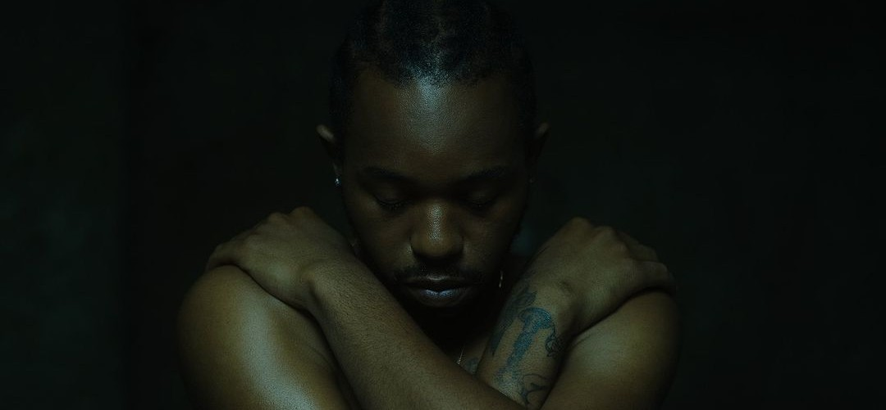

Cantor e compositor americano

Os primeiros anos da carreira de Montell Fish foram marcados por uma trajetória independente e introspectiva, na qual o artista começou a divulgar suas músicas em plataformas como SoundCloud e YouTube, conquistando um público fiel com sua sonoridade lo-fi e influências de R&B alternativo.
Suas composições iniciais abordavam temas como fé, dúvidas e conflitos emocionais, refletindo uma forte conexão com sua espiritualidade e vivências pessoais. Projetos como Bedroom Gospel ajudaram a consolidar sua identidade artística, destacando seu estilo cru, emocional e autêntico, que rapidamente chamou atenção dentro do cenário independente e lançou as bases para sua evolução musical posterior.
Ao longo desses primeiros trabalhos, ele manteve uma abordagem “faça você mesmo” (DIY), cuidando de grande parte da produção, composição e distribuição de suas músicas.
Com o crescimento orgânico de sua base de fãs, impulsionado principalmente pelas redes sociais, Montell Fish começou a expandir sua sonoridade e a explorar novos temas, preparando o terreno para projetos mais maduros. Esses anos iniciais foram essenciais para definir sua identidade artística: íntima, reflexiva e emocionalmente honesta.
“Eu só quero que minha música seja honesta — como uma conversa entre mim e Deus, ou entre mim e quem estiver ouvindo.”
Montell Fish
“Fall in love with you, you
My love”
Montell Fish - Fall in Love with You
Você pode conhecer mais sobre o cantor clicando aqui.